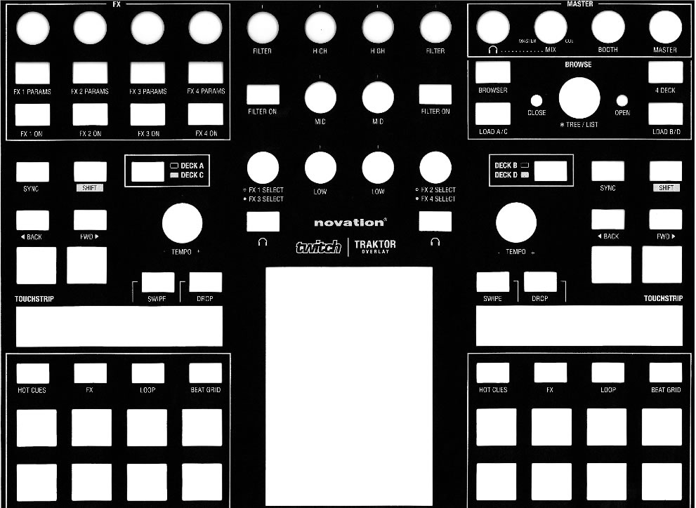

Novation Twitch have 2 modes: Basic & Advaced. This Script made for Basic Mode only.
Holding the BACK and FWD keys [OPEN and CLOSE] while pushing the BROWSE wheel instructs Twitch to enter advanced mode, or to switch back to basic mode.
|
DEVICE PAGE |
| K1-8 |
---- |
| F1-8 |
-- |